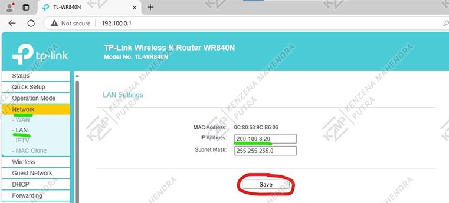
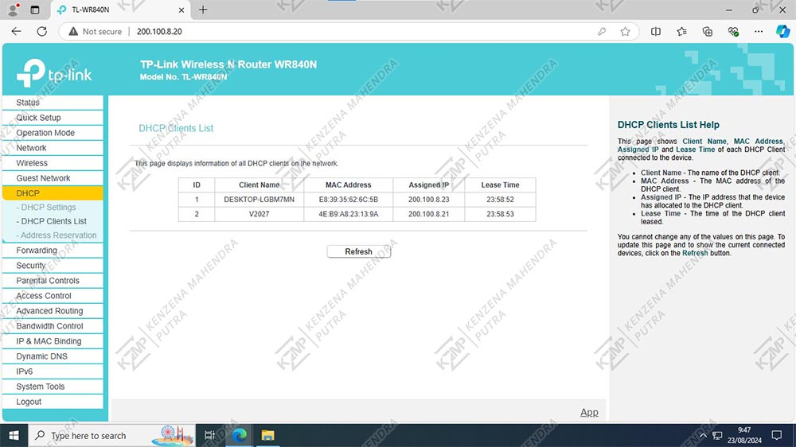

Konfigurasi Wireless Router
Bagian 1: Setting Router
-
Masukkan IP Gateway WiFi: Buka browser dan masukkan alamat IP gateway router, misalnya 192.168.0.1.
Tekan Next pada Quick Setup: Setelah mengakses halaman login router, cari opsi "Quick Setup" dan tekan Next untuk memulai proses pengaturan awal.

-
Pilih Wireless Router: Di menu konfigurasi, pilih opsi "Wireless Router".
Tekan Next: Setelah memilih "Wireless Router", tekan Next untuk melanjutkan konfigurasi.

-
Pilih Dynamic IP: Pilih opsi "Dynamic IP" untuk mengonfigurasi router agar mendapatkan alamat IP secara otomatis dari ISP.
Tekan Next: Setelah memilih "Dynamic IP", tekan Next untuk melanjutkan ke langkah berikutnya.

-
Pilih "No, I do Not need to clone MAC address": Pilih opsi ini jika Anda tidak perlu mengganti alamat MAC router.
Tekan Next: Setelah memilih opsi tersebut, tekan Next untuk melanjutkan ke langkah berikutnya.

-
Isi Kolom Wireless Network Name: Masukkan nama jaringan wireless dengan format "(nama)_(no absen)", misalnya KENZENA_20.
Pilih WPA2-PSK pada Opsi Security: Pilih WPA2-PSK untuk metode enkripsi keamanan.
Isi Wireless Password: Masukkan password wireless dengan format 8 huruf yang mencakup huruf besar, huruf kecil, angka, dan huruf spesial, misalnya KZmp@123.
Checklist More Advanced Wireless Settings: Centang opsi More Advanced Wireless Settings untuk pengaturan tambahan.
Pilih Channel: Pilih channel sesuai dengan format nomor absen. Misalnya, jika nomor absen Anda adalah 20, pilih channel 10, jika 1 pilih channel 1, jika 2 pilih channel 2, jika 11 pilih channel 1
Tekan Next: Setelah mengisi semua kolom dan memilih opsi yang diperlukan, tekan Next untuk melanjutkan ke langkah berikutnya.

-
Klik Save untuk menyimpan konfigurasi wireless router.

-
Pergi ke Menu Network dan Pilih LAN: Akses menu Network dan pilih LAN untuk mengonfigurasi pengaturan LAN.
Ubah IP Address: Atur IP address sesuai dengan format tugas, yaitu 200.100.8.(nomer absen). Misalnya, jika nomor absen Anda adalah 20, masukkan 200.100.8.20.
Klik Save atau Apply: Simpan pengaturan yang telah diubah.
 -
klik ok untuk menyimpan IP Address.

-
Masuk Ulang ke Router: Akses router menggunakan IP gateway yang baru, misalnya 200.100.8.20.
Pilih Menu DHCP: Akses menu DHCP dan pilih DHCP Settings.
Aktifkan DHCP: Pilih Enable untuk mengaktifkan DHCP.
Isi Start IP Address: Masukkan alamat IP mulai dengan format 200.100.8.(nomer absen + 1). Misalnya, jika nomor absen Anda adalah 20, masukkan 200.100.8.21.
Isi End IP Address: Masukkan alamat IP akhir dengan format 200.100.8(start IP address + 5). Misalnya, jika start IP address adalah 200.100.8.21, maka end IP address adalah 200.100.8.25.
Isi Lease Time: Atur lease time menjadi 24 jam atau 1440 menit.
Isi Default Gateway: Masukkan IP gateway router, misalnya 200.100.8.20.
Isi DNS Server: Masukkan 8.8.8.8 sebagai DNS server utama.
Isi Secondary DNS Server: Masukkan 8.8.4.4 sebagai secondary DNS server.
Isi Secondary DNS Server: Masukkan 8.8.4.4 sebagai secondary DNS server.
Klik Save: Simpan semua pengaturan yang telah diisi.

-
Pergi ke Menu System Tools: Akses menu System Tools.
Pilih Password: Klik opsi Password untuk mengubah informasi login router.
Masukkan Old Username: Isi kolom Old Username dengan admin (default).
Masukkan Old Password: Isi kolom Old Password dengan admin (default).
Isi New Username: Masukkan New Username sesuai keinginan Anda.
Isi New Password: Masukkan New Password dengan kata sandi baru Anda.
Isi Confirm Password: Masukkan kembali password baru Anda di kolom Confirm Password.
Klik Save atau Apply: Simpan perubahan.
Langkah ini memperbarui nama pengguna dan kata sandi untuk mengakses router sesuai preferensi Anda.

Bagian 2 : Uji Router
-

-